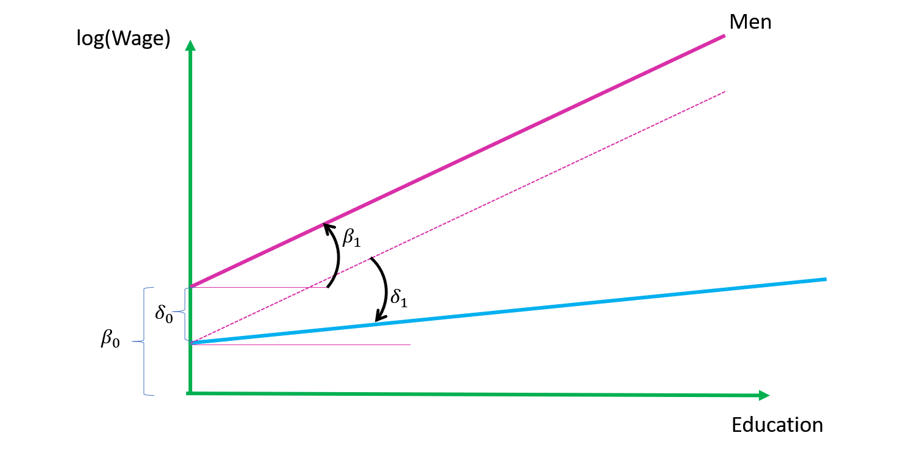
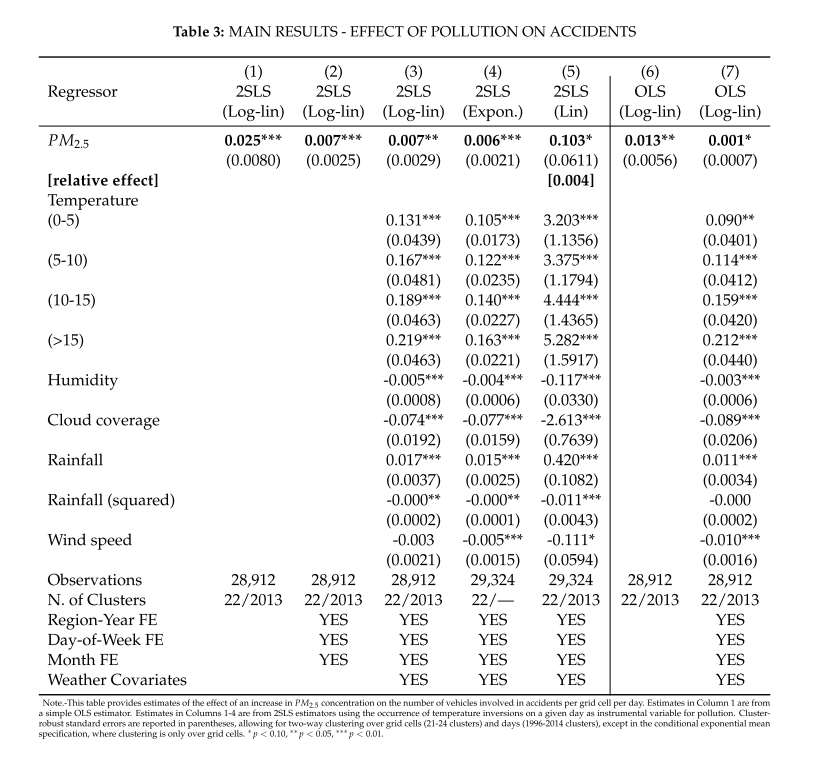
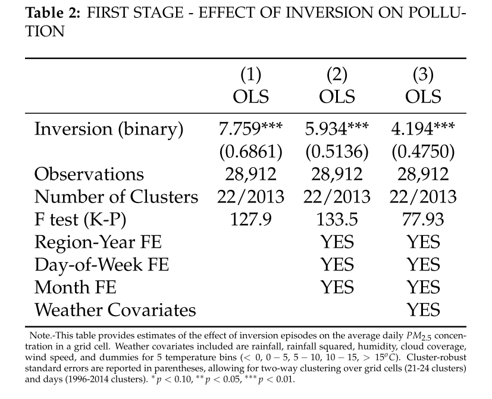
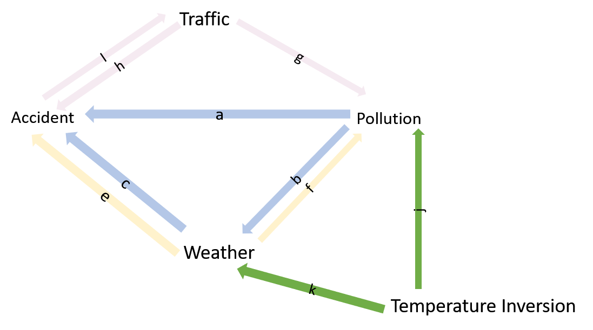

More exercises to help you become an econometrics superstar
\[log(wage)=(\beta_0+\delta_0 female)+(\beta_1+\delta_1 female) \times educ + u\] where wage is the hourly wage, female is a gender dummy, which is equal 1 if the individual is female, and educ is the number of years of education. Provide an interpretation if \(δ_0<0\) and \(δ_1<0\).
This is a linear model where the intercept men is \(\beta_0\) and for women is \(\beta_0+\delta_0 female\). The change in log wages for men is \(\beta_1\) whereas for women it is \(\beta_1+\delta_1 female\). Also note that because we have log wage as dependent variable, these coefficients can be interpreted as percentage changes in wage. If \(δ_0<0\) and \(δ_1<0\), this means that women earn less for a given level of education and also that the change in wage for a given change in education (i.e. the returns to education) are lower for women.
The figure below illustrates this model:  Note that \(\beta_1\) represents the slope of the line for men whereas \(\delta_1\) reperesents how much less the line for women is sloped compared to men.
This would require the joint hypothesis: \(δ_0=0\) & \(δ_1=0\). This can be implemented via a joint (F-) test; e.g. in R this can be done with the linearHypothesis Command.
Man with 10 years: \(E\{log(wage)|Man\}=\beta_0+\beta_1 \times educ\)
Women with 10 years: \(E\{log(wage)|Women\}=\beta_0+\delta_0+(\beta_1+\delta_1) \times educ\)
The wage differential between a man an women with the same 10 years of education becomes \[E\{log(wage)|Man,10years\} - E\{log(wage)|Women,10 years\}=-(\delta_0+\delta_1\times 10)\] \[=0.1+10\times0.01=0.2\] Thus we would expect the women to have a a 20% lower wage
Consequently the effect of education on women’s wages would become \(β_1+\delta_1=0.01-0.01=0\). This would mean that education has no effect on women’s wages.
The equation describes a hump shaped relationship between wages and age (since the squared term is negative). It therefore makes sense to find the top of the hump which will have an age gradient of 0. The gradient can be found by differentiating with respect to age: \[\frac{\partial W}{\partial AGE}=10-0.1\times 2 \times AGE\] Thus setting \(\frac{\partial W}{\partial AGE}\) equal to zero leads to \[AGE^{max.wage}=\frac{10}{0.1\times 2}=50\]
Consider the dataset ets_thres_final.csv. It contains emission figures (lnco2=log of CO2 emissions) for a sample of firms regulated by the European Emissions Trading System (EUETS) for the years from 2005 to 2017 although the firm identifiers have gone missing from the dataset. Note that an Emissions Trading System requires firms to buy permits for every unit of CO2 they emit. By restricting the total number of permits that are issued governments can control the total amount of emissions while allowing firms to trade permits freely so that they can be used with those businesses that find it hardest to reduce emissions. In the early days of the EU ETS (which started in 2005) permits where freely given to firms. This changed from 2013 onwards when permits where only given to certain firms and sectors that were deemed at risk from foreign competition. The variable free indicates those firms in the dataset. According to economic theory the method of permits allocation should have no effect on the eventual emissions by firms (Independence hypothesis). Firms that have been given free permits will have an incentive to reduce emissions as that frees up permits to sell within the permit market.
library(dplyr)
df=read.csv("https://www.dropbox.com/s/yylc6ygkcrjir39/ets_thres_final.csv?dl=1")
df=df %>% mutate(free=factor(free),period=factor(period))
head(df)
X year COUNTRY_CODE xCOU period lnco2 free
1 1 2009 AT 1 1 9.179675 0
2 2 2010 AT 1 1 9.200492 0
3 3 2011 AT 1 1 9.326789 0
4 4 2012 AT 1 1 9.324919 0
5 5 2013 AT 1 2 9.332470 0
6 6 2014 AT 1 2 9.424483 0
lm(lnco2~free,df) %>% summary()
Call:
lm(formula = lnco2 ~ free, data = df)
Residuals:
Min 1Q Median 3Q Max
-9.3522 -0.7237 0.0633 0.8396 6.4050
Coefficients:
Estimate Std. Error t value Pr(>|t|)
(Intercept) 9.35221 0.02325 402.23 <2e-16 ***
free1 0.50395 0.03361 14.99 <2e-16 ***
---
Signif. codes: 0 '***' 0.001 '**' 0.01 '*' 0.05 '.' 0.1 ' ' 1
Residual standard error: 1.387 on 6827 degrees of freedom
(443 observations deleted due to missingness)
Multiple R-squared: 0.03188, Adjusted R-squared: 0.03174
F-statistic: 224.8 on 1 and 6827 DF, p-value: < 2.2e-16
df %>% group_by(year) %>% summarise(n())
# A tibble: 9 x 2
year `n()`
<int> <int>
1 2009 808
2 2010 808
3 2011 808
4 2012 808
5 2013 808
6 2014 808
7 2015 808
8 2016 808
9 2017 808The firms that receive free permits pollute 50% more on average over the 2009 to 2017 period.
lm(lnco2~period,df) %>% summary()
Call:
lm(formula = lnco2 ~ period, data = df)
Residuals:
Min 1Q Median 3Q Max
-9.5943 -0.7241 0.0457 0.8979 6.6685
Coefficients:
Estimate Std. Error t value Pr(>|t|)
(Intercept) 9.594291 0.025888 370.602 <2e-16 ***
period2 -0.001621 0.034425 -0.047 0.962
---
Signif. codes: 0 '***' 0.001 '**' 0.01 '*' 0.05 '.' 0.1 ' ' 1
Residual standard error: 1.41 on 6827 degrees of freedom
(443 observations deleted due to missingness)
Multiple R-squared: 3.247e-07, Adjusted R-squared: -0.0001462
F-statistic: 0.002216 on 1 and 6827 DF, p-value: 0.9625This shows that on average emission after 2012 are .16 percent lower than before 2013, a value that is not significantly different from zero.
The results in part a) confound the treatment effect with any - pre-existing - firm characteristics that might have influenced the allocation of permits. For instance it might well be that the most energy (and therefore pollution) intensive firms were given free permits.
In the dataset as it is there is actually no variable that properly captures the treatment we are interested in. free identifies firms that are eventually treated but it is equal to 1 also in periods when they are not treated. But it is easy to create a dummy variable, which is only equal to one for those firms that treated in periods when they are treated: we simply have to creat a dummy variable that is only true for free firms during period 2. Let’s try that:
df=df %>% mutate( period2Xfree= (free==1) & ( as.character(period)=="2" ) )
lm(lnco2~period2Xfree,df) %>% summary()
Call:
lm(formula = lnco2 ~ period2Xfree, data = df)
Residuals:
Min 1Q Median 3Q Max
-9.4827 -0.7056 0.0515 0.8488 6.7445
Coefficients:
Estimate Std. Error t value Pr(>|t|)
(Intercept) 9.48272 0.01980 478.84 <2e-16 ***
period2XfreeTRUE 0.41000 0.03812 10.76 <2e-16 ***
---
Signif. codes: 0 '***' 0.001 '**' 0.01 '*' 0.05 '.' 0.1 ' ' 1
Residual standard error: 1.398 on 6827 degrees of freedom
(443 observations deleted due to missingness)
Multiple R-squared: 0.01666, Adjusted R-squared: 0.01652
F-statistic: 115.7 on 1 and 6827 DF, p-value: < 2.2e-16At face value this would suggest that firms receiving free permits leads to 41% more CO2 emissions. However, there are at least 2 potential confounding factors: 1. The fact that firms have not been selected at random to receive permits 2. There might be time effects present. For instance, after 2013 growth might have picked up following the recession of 2008.
We can control for the first issue by including free as a control variable as (it measures how different the free firms were before they received free permits). The second issue we can address with a period dummy variable. Hence:
lm(lnco2~period+free+period2Xfree,df) %>% summary()
Call:
lm(formula = lnco2 ~ period + free + period2Xfree, data = df)
Residuals:
Min 1Q Median 3Q Max
-9.3960 -0.7187 0.0645 0.8428 6.4183
Coefficients:
Estimate Std. Error t value Pr(>|t|)
(Intercept) 9.39599 0.03532 265.994 < 2e-16 ***
period2 -0.07722 0.04691 -1.646 0.0998 .
free1 0.41288 0.05097 8.100 6.45e-16 ***
period2XfreeTRUE 0.16108 0.06779 2.376 0.0175 *
---
Signif. codes: 0 '***' 0.001 '**' 0.01 '*' 0.05 '.' 0.1 ' ' 1
Residual standard error: 1.387 on 6825 degrees of freedom
(443 observations deleted due to missingness)
Multiple R-squared: 0.03268, Adjusted R-squared: 0.03225
F-statistic: 76.86 on 3 and 6825 DF, p-value: < 2.2e-16Hence, this changes the the coefficient for period2Xfree quita bit; i.e. it would suggest that free permit alloction increases emission by 16% only.
An alternative way of implementing that is via the : operator which interacts (multiplies) variables “on the fly”:
lm(lnco2~period+free+period:free,df) %>% summary()
Call:
lm(formula = lnco2 ~ period + free + period:free, data = df)
Residuals:
Min 1Q Median 3Q Max
-9.3960 -0.7187 0.0645 0.8428 6.4183
Coefficients:
Estimate Std. Error t value Pr(>|t|)
(Intercept) 9.39599 0.03532 265.994 < 2e-16 ***
period2 -0.07722 0.04691 -1.646 0.0998 .
free1 0.41288 0.05097 8.100 6.45e-16 ***
period2:free1 0.16108 0.06779 2.376 0.0175 *
---
Signif. codes: 0 '***' 0.001 '**' 0.01 '*' 0.05 '.' 0.1 ' ' 1
Residual standard error: 1.387 on 6825 degrees of freedom
(443 observations deleted due to missingness)
Multiple R-squared: 0.03268, Adjusted R-squared: 0.03225
F-statistic: 76.86 on 3 and 6825 DF, p-value: < 2.2e-16For this question use the dataset hals1prep.csv, containing data from the UK Health and Lifestyle Survey (1984-85). In this survey, several thousand people in the UK were being asked questions about their health and lifestyle.
halsx=read.csv("https://mondpanther.github.io/datastorieshub/data/hals1prep.csv")
table(halsx$ownh)
1 2 3 4
1850 4563 2076 482
table(halsx$region)
east anglia east midlands greater london north
333 682 943 540
north west scotland south east south west
1092 925 1607 720
wales west midlands yorks/humber
498 823 808
#summary(lm(bmi~ region, halsx))
summary(lm(bmi~0+ region, halsx))
Call:
lm(formula = bmi ~ 0 + region, data = halsx)
Residuals:
Min 1Q Median 3Q Max
-12.3808 -2.8505 -0.5398 2.2378 30.3695
Coefficients:
Estimate Std. Error t value Pr(>|t|)
regioneast anglia 24.5650 0.2417 101.6 <2e-16 ***
regioneast midlands 24.6908 0.1723 143.3 <2e-16 ***
regiongreater london 24.0111 0.1506 159.4 <2e-16 ***
regionnorth 24.6737 0.1943 127.0 <2e-16 ***
regionnorth west 24.7005 0.1371 180.2 <2e-16 ***
regionscotland 24.9136 0.1504 165.7 <2e-16 ***
regionsouth east 24.0898 0.1107 217.6 <2e-16 ***
regionsouth west 24.7633 0.1694 146.2 <2e-16 ***
regionwales 25.2405 0.2071 121.9 <2e-16 ***
regionwest midlands 24.5064 0.1614 151.8 <2e-16 ***
regionyorks/humber 24.6052 0.1585 155.3 <2e-16 ***
---
Signif. codes: 0 '***' 0.001 '**' 0.01 '*' 0.05 '.' 0.1 ' ' 1
Residual standard error: 4.08 on 7260 degrees of freedom
(1700 observations deleted due to missingness)
Multiple R-squared: 0.9731, Adjusted R-squared: 0.9731
F-statistic: 2.392e+04 on 11 and 7260 DF, p-value: < 2.2e-16If we drop the intercept by writing 0+... the dummies represent the average BMI values. We that Wales has the highest, with both Scotland and Wales above 24.9 and all other regions within the healthy range.
ownh_num variable. Run a regression of ownh_num on bmi and provide a discussion of what you find. Is it in line with your expectations on this?
lm(ownh_num~bmi , halsx) %>% summary()
Call:
lm(formula = ownh_num ~ bmi, data = halsx)
Residuals:
Min 1Q Median 3Q Max
-1.4558 -0.2020 -0.1069 0.8016 2.0259
Coefficients:
Estimate Std. Error t value Pr(>|t|)
(Intercept) 1.777801 0.056678 31.367 < 2e-16 ***
bmi 0.014155 0.002278 6.213 5.48e-10 ***
---
Signif. codes: 0 '***' 0.001 '**' 0.01 '*' 0.05 '.' 0.1 ' ' 1
Residual standard error: 0.7948 on 7269 degrees of freedom
(1700 observations deleted due to missingness)
Multiple R-squared: 0.005283, Adjusted R-squared: 0.005146
F-statistic: 38.6 on 1 and 7269 DF, p-value: 5.481e-10An increase in the BMI by 1 unit increases the health score 0.014 units. Because a higher value of the score implies worse health this suggests a reduction in health which is line with expectations.
There might be a variety of confounding factors; e.g. richer people might be healthier and less overweight because they can afford higher quality food (making them slimmer) as well as better medical care (making them healthier for reasons unrelated to food intake and weight). Hence, because in this scenario money is negatively correlated with both BMI and the onwnh_num health score this leads to an upward bias; i.e. the coefficient would be lower in reality than what we found.
Education might play a similar role; i.e. better educated people will be healthier for a range of reasons (e.g. knowledge about health and how get the best care) and the same knowledge might also allow them to eat better and gain less weight.
There might also be a direct reverse causality: people who are sicker might find it hard to exercise and/or make the effort of doing high quality cooking which would again lead to an upward bias in our regression.
However, note that one could imagine that this also goes the other way round: many diseases lead to extreme weight loss which would imply a downward bias in our regression.
Age might be an other issue. Most people get a bit fatter as they age (well at least I do). Now the question asks to consider age when answering the question. However, there might be a systematic bias in how people respond to such questions. E.g. suppose older people tend to get more content than younger people so that they are more often just happy with their health. This would mean that age has a negative effect (more healthy) on the dependent variable. At the same time there is a positive effect on BMI. This would mean a negative correlation between errors and omitted variable implying a downward bias.
Again the bias could go the other way round if for instance older people are more likely to become hypochondriacs.
• incomeB a categorical variable representing income brackets where “1” represents the lowest and “12” the highest income group. • agyrs – a variable recording the age of the participant
Include those in the regression of reported health from b) Discuss what the output suggests about the relationships between health and age, and health and income. Are they in line with what you would have expected? In each case can you provide an explanation for the kind of relationship found?
Also discuss the usefulness of including both the age and income controls for estimating the causal effect of BMI. In each case discuss at least one reason for and one reason against including these controls. [5 points]
lm(ownh_num~bmi+agyrs+factor(incomeB) , halsx) %>% summary()
Call:
lm(formula = ownh_num ~ bmi + agyrs + factor(incomeB), data = halsx)
Residuals:
Min 1Q Median 3Q Max
-1.64142 -0.34612 -0.08213 0.65138 2.18574
Coefficients:
Estimate Std. Error t value Pr(>|t|)
(Intercept) 1.9586826 0.1242120 15.769 < 2e-16 ***
bmi 0.0123175 0.0025664 4.800 1.63e-06 ***
agyrs -0.0018862 0.0006752 -2.794 0.00523 **
factor(incomeB)2 0.1639262 0.1097212 1.494 0.13522
factor(incomeB)3 0.1738317 0.1087402 1.599 0.10997
factor(incomeB)4 0.0090082 0.1099935 0.082 0.93473
factor(incomeB)5 -0.0846940 0.1069890 -0.792 0.42862
factor(incomeB)7 -0.2736317 0.1124488 -2.433 0.01499 *
factor(incomeB)8 -0.2231460 0.1126696 -1.981 0.04769 *
factor(incomeB)9 -0.1422836 0.1116748 -1.274 0.20268
factor(incomeB)10 -0.2764668 0.1221840 -2.263 0.02369 *
factor(incomeB)12 -0.3545969 0.1246759 -2.844 0.00447 **
---
Signif. codes: 0 '***' 0.001 '**' 0.01 '*' 0.05 '.' 0.1 ' ' 1
Residual standard error: 0.7814 on 5699 degrees of freedom
(3260 observations deleted due to missingness)
Multiple R-squared: 0.03819, Adjusted R-squared: 0.03633
F-statistic: 20.57 on 11 and 5699 DF, p-value: < 2.2e-16The health score for higher income bands is lower suggesting richer people tend to be healthier (or at least report to be healther). This is inline what we would expect: richer people can afford better health care, live in healthier houses, in better neighbourhoods with less pollution etc.
The relation between age and health seems a bit more surprising as it suggests that older people report being healthier. But we have to remind ourselves that the question asked “how is your health given your age”. Hence, it could mean that older people lower their standards and are more content.
Another more sinister explanation is the following: suppose each generation has some people that are inherently healthy (e.g. based on their genes) and other that more sickly. Clearly we would expect the healthier to be less likely to die and thereby get older. This would mean that even if people respond in exactly the same to the health question throughout their life the only old people remaining to respond to the survey are the ones that always responded as being in great health.
We would want to include those variables if there is concern regarding some of the biases discussed in part c). For that they do not only need to have an affect on the dependent variable (health score) but also cause some of the variation in the BMI explanatory variable. See part c) for a more elaborate discussion.
An important reason not to include those is if we think the causal chain goes the other way round; e.g. it could be that people who are overweight have harder time in the job market making them poorer. Equally, being overweight might affect your chances of survival and thereby your age.
labels=c("excellent", "good", "fair", "poor")
for(i in 1:4){
fr=halsx
fr['dum']=fr$ownh_num==i
fr['label']=labels[i]
if(i==1){
longframe=fr
}
else {
longframe=rbind(longframe,fr)
}
print(nrow(longframe))
}
[1] 8971
[1] 17942
[1] 26913
[1] 35884
summary(lm(dum~label,longframe))
Call:
lm(formula = dum ~ label, data = longframe)
Residuals:
Min 1Q Median 3Q Max
-0.50864 -0.23141 -0.20622 0.08254 0.94627
Coefficients:
Estimate Std. Error t value Pr(>|t|)
(Intercept) 0.206220 0.004231 48.74 < 2e-16 ***
labelfair 0.025192 0.005984 4.21 2.56e-05 ***
labelgood 0.302419 0.005984 50.54 < 2e-16 ***
labelpoor -0.152491 0.005984 -25.48 < 2e-16 ***
---
Signif. codes: 0 '***' 0.001 '**' 0.01 '*' 0.05 '.' 0.1 ' ' 1
Residual standard error: 0.4007 on 35880 degrees of freedom
Multiple R-squared: 0.1436, Adjusted R-squared: 0.1435
F-statistic: 2005 on 3 and 35880 DF, p-value: < 2.2e-16The regression reports the share of responses to the health question in the data; i.e. from the intercept we can see that 20.6% of respondents report excellent health. (20.6+2.5)% respond that their health is fair and so on.
Air pollution has been shown to have a variety of adverse health effects. Recently, researchers have also started to investigate other negative effects. Below we report regression tables from a study that investigates a link between air pollution and car accidents.
Air pollution affects the respiratory system. If people cannot breathe so well that might eventually affect their brain. Drivers might consequently be less able to focus and therefore are more likely to cause accidents. Pollution could also cause poorer visibility that leads to accidents.

There are a number of potentially confounding factors for instance traffic: more traffic will cause more pollution but also makes accidents more likely. Similarly: weather factors such as heat or clouds induce more pollution but could also lead to more (or less accidents). Weather could also work the other way round: rain could reduce pollution, while increasing accidents; i.e. because pollution is negatively correlated with rain and rain positively with accidents we have a downward bias.
Moreover, there could be a direct reverse causality: accidents cause traffic jams which increases pollution.
By including a range of weather controls we address some of the points raised in (b) which should be an improvement. However, a concern with weather variables as controls is that while on the one hand weather can cause pollution and accidents, pollution could also cause the weather (e.g. clouds forming because of particulate pollution) which in turn could affect accidents. The estimate in column 7 would not account for this causal effect.
Table 2 reports first stage regressions for this instrument. This allows us to check one of the three criteria for a valid instrument, namely if it is a strong driver of the relevant endogenous variable. This seems to be the case here: not only is the inversion variable significant, the F-statistic is also rather high (larger than 10).

Given that Temperature inversions are likely not driven by pollution this could get round issues such as the traffic-> pollution nexus. However, it is also likely that inversions drive other potentially pollution causing weather events (e.g. clouds, rain). However, we can deal with that by including weather variables (as done in column 3). Of course, the same disclaimer applies as in par c); i.e. we might miss out on parts of the causal effect by doing that. Note that the effect of pollution becomes actually stronger when using the instrument (e.g. compare column 1 and 6, but also 3 vs 7). This suggest that it addresses an endogeneity arising from a negative correlation between un-observed heterogeneity and the endogenous variable in 6; e.g. it could be the case that there are less accidents when traffic goes up (and therefore pollution goes up) because traffic is moving more slower.
The picture below summarises the various issues we discussed in this question:
 Firstly, our goal is to identify the causal effect of pollution on accidents. This comprises of direct effect (e.g. via bad visibility) represented by arrow a. This could also include more indirect effects via weather shown as arrows b and c. Simple OLS estimates of accidents on pollution will be biased because of confounding factors such as effects from traffic or weather on both pollution and accidents. Indeed accidents themselves could affect traffic which in turn could affect pollution (arrow i). Controlling for counfounding factors such as traffic or weather can be helpful in finding a non-biased estimate. However, it also could mean that we ignore part of the causal effect we hope to find; e.g. in the figure we would miss out the path shown via arrow b and c if we control for weather. An instrument such as temperature inversion is helpful as it drives pollution and is likely not affected by any endogenous factors (i.e. that ensures criterion 1 and 2 of IV estimation). However, there could be an issue with criterion 3 in an IV regression without further controls because Temperature Inversion is not only having an effect on pollution but it might also cause a range of other weather phenomena. If we include weather as an additional control as in column 3 we will avoid this issue. However, we also might again shut down channel b-c. The good news in Table 3 is that with or without weather variables we find the same effect from pollution which would suggest that channel b-c might not be so relevant.
Consider the dataset back2country_set.dta. It contains data on 71 countries for various 5 year periods from 1992 to 2012 (i.e. the period 2012 refers to the period from 2008 to 2012) Among other variables the dataset contains the following
• en_cleanOdirtyPclean is the share of clean as a fraction of clean and dirty innovations (as measured from patent data).
• social_ht is the share of people in the country that report to favour higher taxes for environmental reasons
• ln_oil_PPP is the log of the country level oil price (inclusive of taxes)
• period is a categorical variable referring to the different 5 year periods.
• ccode contains country codes
Note the dataset for this exercise is in dta (i.e. STATA format). You can load that into R as follows:
library(haven) # this contains the read_dta() to load dta (i.e. STATA) files
b2c=read_dta("https://www.dropbox.com/s/oksq88o336w161j/back2country_set.dta?dl=1")
lm(en_cleanOdirtyPclean~social_ht+ln_oil_PPP+factor(period),b2c) %>% summary()
Call:
lm(formula = en_cleanOdirtyPclean ~ social_ht + ln_oil_PPP +
factor(period), data = b2c)
Residuals:
Min 1Q Median 3Q Max
-0.45419 -0.12094 0.01522 0.13474 0.45992
Coefficients:
Estimate Std. Error t value Pr(>|t|)
(Intercept) -0.49010 0.22027 -2.225 0.0277 *
social_ht 0.02709 0.04747 0.571 0.5691
ln_oil_PPP 0.18331 0.03137 5.843 3.48e-08 ***
factor(period)1997 0.06825 0.05097 1.339 0.1828
factor(period)2002 0.08802 0.05209 1.690 0.0934 .
factor(period)2007 0.03250 0.05658 0.574 0.5666
factor(period)2012 0.11138 0.07342 1.517 0.1315
---
Signif. codes: 0 '***' 0.001 '**' 0.01 '*' 0.05 '.' 0.1 ' ' 1
Residual standard error: 0.1872 on 139 degrees of freedom
(591 observations deleted due to missingness)
Multiple R-squared: 0.3138, Adjusted R-squared: 0.2842
F-statistic: 10.59 on 6 and 139 DF, p-value: 1.135e-09
summary(b2c$social_ht)
Min. 1st Qu. Median Mean 3rd Qu. Max. NA's
1.871 2.766 3.054 3.041 3.362 4.045 504 i.e. The regression suggest a positive (put not significant) coefficient for social attitudes (social_ht) of 0.027. Hence, a 5 percentage point increase in the share of people supporting higher environmental taxes would imply a 0.027 x 5 percentage points= 0.135 percentage point increase in the share of clean innovation.
Firms cater to their markets. If a country has more pro environmental voters it will have more pro environmental customers. Firms will respond to that by conducting innovation into products that can be marketed to those customers as pro – environmental.
There are many possible omitted variable or reverse causality stories to be told here; e.g. pro environmental attitudes and stronger focus on clean innovation could be jointly driven by the level of income and development of a country. Success in a particular technology – e.g. clean technologies – might also by itself cause pro environmental attitudes.
Also higher oil price might be one of the channels via which pro environmental attitudes might affect innovation; e.g. pro environmental attitudes lead to policies such as energy taxes. Hence, including this variable might underestimate the full causal effect from attitudes. Having said that, one question we might have in this research is if attitudes have an impact on the direction of innovation, irrespective of taxes for fuel prices. In that case it would be appropriate to include this control. This shows, nicely that which controls you might want to include depends in part on the what exactly your analysis is trying to do.
lm(en_cleanOdirtyPclean~social_ht+ln_oil_PPP+factor(period)+factor(ccode),b2c) %>% summary()
Call:
lm(formula = en_cleanOdirtyPclean ~ social_ht + ln_oil_PPP +
factor(period) + factor(ccode), data = b2c)
Residuals:
Min 1Q Median 3Q Max
-0.23354 -0.04737 0.00000 0.05087 0.20513
Coefficients:
Estimate Std. Error t value Pr(>|t|)
(Intercept) -0.565119 0.277232 -2.038 0.044200 *
social_ht 0.114364 0.035509 3.221 0.001736 **
ln_oil_PPP 0.121696 0.049067 2.480 0.014835 *
factor(period)1997 0.097519 0.027820 3.505 0.000689 ***
factor(period)2002 0.145598 0.030457 4.780 6.16e-06 ***
factor(period)2007 0.137128 0.040795 3.361 0.001107 **
factor(period)2012 0.241725 0.061112 3.955 0.000145 ***
factor(ccode)AU 0.178088 0.088830 2.005 0.047742 *
factor(ccode)BE 0.077369 0.075707 1.022 0.309323
factor(ccode)BG 0.280554 0.086384 3.248 0.001593 **
factor(ccode)BR 0.274031 0.102835 2.665 0.009010 **
factor(ccode)CA -0.013153 0.069869 -0.188 0.851072
factor(ccode)CH -0.140932 0.073520 -1.917 0.058160 .
factor(ccode)CN 0.225245 0.092335 2.439 0.016508 *
factor(ccode)CY -0.135501 0.114910 -1.179 0.241175
factor(ccode)CZ 0.331754 0.080399 4.126 7.74e-05 ***
factor(ccode)DE 0.068754 0.068500 1.004 0.317994
factor(ccode)DK 0.080852 0.079580 1.016 0.312136
factor(ccode)ES 0.270450 0.071852 3.764 0.000285 ***
factor(ccode)FI -0.142047 0.069755 -2.036 0.044410 *
factor(ccode)FR 0.013279 0.075705 0.175 0.861120
factor(ccode)GB 0.118911 0.071604 1.661 0.099977 .
factor(ccode)GR 0.287559 0.117060 2.457 0.015788 *
factor(ccode)HR 0.320115 0.080641 3.970 0.000137 ***
factor(ccode)HU 0.306553 0.084108 3.645 0.000430 ***
factor(ccode)ID 0.186398 0.133107 1.400 0.164562
factor(ccode)IE 0.174563 0.079000 2.210 0.029457 *
factor(ccode)IN 0.042168 0.108593 0.388 0.698629
factor(ccode)IT -0.217889 0.075439 -2.888 0.004768 **
factor(ccode)JP 0.301983 0.069631 4.337 3.51e-05 ***
factor(ccode)KR 0.034720 0.079368 0.437 0.662740
factor(ccode)LT 0.206439 0.115510 1.787 0.076998 .
factor(ccode)LU -0.161064 0.110599 -1.456 0.148508
factor(ccode)LV 0.478426 0.071231 6.717 1.23e-09 ***
factor(ccode)MX 0.198181 0.070821 2.798 0.006185 **
factor(ccode)NL -0.070671 0.080835 -0.874 0.384108
factor(ccode)NO 0.159818 0.082045 1.948 0.054284 .
factor(ccode)NZ 0.220711 0.075119 2.938 0.004116 **
factor(ccode)PL 0.317474 0.078613 4.038 0.000107 ***
factor(ccode)PT 0.340365 0.096022 3.545 0.000604 ***
factor(ccode)RO 0.267879 0.100362 2.669 0.008902 **
factor(ccode)RU 0.252490 0.109050 2.315 0.022678 *
factor(ccode)SE -0.203249 0.085854 -2.367 0.019878 *
factor(ccode)SK 0.307865 0.088092 3.495 0.000714 ***
factor(ccode)TH -0.009082 0.137805 -0.066 0.947586
factor(ccode)TR 0.164923 0.096589 1.707 0.090900 .
factor(ccode)US -0.013032 0.069369 -0.188 0.851369
factor(ccode)ZA 0.014158 0.083461 0.170 0.865650
---
Signif. codes: 0 '***' 0.001 '**' 0.01 '*' 0.05 '.' 0.1 ' ' 1
Residual standard error: 0.0926 on 98 degrees of freedom
(591 observations deleted due to missingness)
Multiple R-squared: 0.8817, Adjusted R-squared: 0.8249
F-statistic: 15.53 on 47 and 98 DF, p-value: < 2.2e-16Note that the coefficient on social_ht is now 0.114. Hence a 10 percentage point increase would lead to a 0.114 x 10 pcp=1.14 pcp increase in the clean innovation share. Note that this is not only larger but also significant.
Including country fixed effects will deal with confounding factors that are operating at the country level and are fixed over time. e.g. if the relationship found previously is in part driven by income and relative country incomes haven’t changed that much (while attitudes have) then this last regression might lead to a better – i.e. less biased estimate.
Over recent years the UK has increasingly become more xenophobic. An important question explored by many commentators is the economic damage that this xenophobia will cause. One way to examine this is by looking at the wages of foreign-born workers compared to UK born ones. If wages of foreigners tend to be higher, it is likely that reducing the number of foreigners by terrorising them with hostile immigration procedures – one of Theresa May’s flagship policies - will have negative economic consequences for the native population as well. The dataset [lfsclean].dta(https://www.dropbox.com/s/0mvyckpzsssi5k2/lfsclean.dta?dl=1) contains data from the quarterly labour force survey for the years from 2010 to 2018.
Among other variables it includes the following • lngrsswk: log of the average weekly gross wage • edu: years in education • foreign: a dummy variable indicating that a person was born abraod • quarter • year
library(haven)
lfs=read_dta("https://www.dropbox.com/s/0mvyckpzsssi5k2/lfsclean.dta?dl=1")
lm(lngrsswk~foreign,lfs) %>% summary()
Call:
lm(formula = lngrsswk ~ foreign, data = lfs)
Residuals:
Min 1Q Median 3Q Max
-5.9138 -0.4349 0.0939 0.5443 5.4612
Coefficients:
Estimate Std. Error t value Pr(>|t|)
(Intercept) 5.877326 0.001468 4003.762 <2e-16 ***
foreign 0.036460 0.003996 9.124 <2e-16 ***
---
Signif. codes: 0 '***' 0.001 '**' 0.01 '*' 0.05 '.' 0.1 ' ' 1
Residual standard error: 0.8338 on 372925 degrees of freedom
(2937143 observations deleted due to missingness)
Multiple R-squared: 0.0002232, Adjusted R-squared: 0.0002205
F-statistic: 83.24 on 1 and 372925 DF, p-value: < 2.2e-16The regression suggests that foreign workers earn (on average) 3.6% more than natives.
It could be the case that there in the regression above the foreign variable is partially endogenous. For instance, it could be the case that foreigners come in time periods when the economy is doing better (both over the years but also within a given year - e.g. for seasonal work) and thus wages in general tend to be higher. Note that this would introduce a positive correlation between “foreign” and shocks to wages which might bias our coefficient upward. By including year and quarter dummies we can account for that. The regression below does that finding a slightly lower (but still significant) of 0.3.
lm(lngrsswk~foreign+factor(year)+factor(quarter),lfs) %>% summary()
Call:
lm(formula = lngrsswk ~ foreign + factor(year) + factor(quarter),
data = lfs)
Residuals:
Min 1Q Median 3Q Max
-5.9979 -0.4271 0.0920 0.5535 5.4262
Coefficients:
Estimate Std. Error t value Pr(>|t|)
(Intercept) 5.789088 0.004442 1303.316 < 2e-16 ***
foreign 0.029855 0.003990 7.482 7.31e-14 ***
factor(year)2011 0.014416 0.005428 2.656 0.007916 **
factor(year)2012 0.042441 0.005441 7.800 6.20e-15 ***
factor(year)2013 0.064254 0.005465 11.756 < 2e-16 ***
factor(year)2014 0.083115 0.005456 15.233 < 2e-16 ***
factor(year)2015 0.104964 0.005480 19.153 < 2e-16 ***
factor(year)2016 0.123267 0.005583 22.080 < 2e-16 ***
factor(year)2017 0.165312 0.005551 29.781 < 2e-16 ***
factor(year)2018 0.193901 0.007096 27.326 < 2e-16 ***
factor(quarter)2 0.009685 0.003751 2.582 0.009819 **
factor(quarter)3 0.013639 0.003909 3.489 0.000485 ***
factor(quarter)4 0.019056 0.003905 4.880 1.06e-06 ***
---
Signif. codes: 0 '***' 0.001 '**' 0.01 '*' 0.05 '.' 0.1 ' ' 1
Residual standard error: 0.8318 on 372914 degrees of freedom
(2937143 observations deleted due to missingness)
Multiple R-squared: 0.005003, Adjusted R-squared: 0.004971
F-statistic: 156.3 on 12 and 372914 DF, p-value: < 2.2e-16When including education the foreign coefficient becomes significantly negative (see below). Also note that the education coefficient is positive and significant (1 year more of eduction implies 8% higher wages). Hence it would seem that an important reason why foreigners earn more is because they tend to be more highly educated than the native population. Or put differently: foreigners with similar education levels seem to earn less than natives.
lm(lngrsswk~foreign+edu+factor(year)+factor(quarter),lfs) %>% summary()
Call:
lm(formula = lngrsswk ~ foreign + edu + factor(year) + factor(quarter),
data = lfs)
Residuals:
Min 1Q Median 3Q Max
-6.3227 -0.3982 0.0795 0.4893 5.2480
Coefficients:
Estimate Std. Error t value Pr(>|t|)
(Intercept) 4.7309376 0.0074174 637.815 < 2e-16 ***
foreign -0.1588243 0.0037825 -41.989 < 2e-16 ***
edu 0.0808206 0.0004485 180.206 < 2e-16 ***
factor(year)2011 0.0036654 0.0049737 0.737 0.461153
factor(year)2012 0.0229880 0.0049866 4.610 4.03e-06 ***
factor(year)2013 0.0383417 0.0050063 7.659 1.88e-14 ***
factor(year)2014 0.0561895 0.0049999 11.238 < 2e-16 ***
factor(year)2015 0.0752652 0.0050251 14.978 < 2e-16 ***
factor(year)2016 0.0850140 0.0051215 16.600 < 2e-16 ***
factor(year)2017 0.1172969 0.0050895 23.047 < 2e-16 ***
factor(year)2018 0.1433484 0.0064992 22.056 < 2e-16 ***
factor(quarter)2 0.0080568 0.0034338 2.346 0.018961 *
factor(quarter)3 0.0049519 0.0035772 1.384 0.166270
factor(quarter)4 0.0125272 0.0035737 3.505 0.000456 ***
---
Signif. codes: 0 '***' 0.001 '**' 0.01 '*' 0.05 '.' 0.1 ' ' 1
Residual standard error: 0.7489 on 360915 degrees of freedom
(2949141 observations deleted due to missingness)
Multiple R-squared: 0.0871, Adjusted R-squared: 0.08707
F-statistic: 2649 on 13 and 360915 DF, p-value: < 2.2e-16The regression in a would be more appropriate. As in most cases the foreign workers bring their education with them (and therefore the UK public doesn’t have to pay for that) and increase in “foreign” also tends to “cause” an increase in education. The combined effect of that is the contribution of a foreign relative to a native worker.
We can examine this by allowing for a different education effect for foreigners. The regression below suggests a negative (and significant) interaction effect (foreign X edu). The coefficient suggest that the increase in wages for an additional year in education is 1.5 percentage points less for foreigners.
Call:
lm(formula = lngrsswk ~ foreign * edu + factor(year) + factor(quarter),
data = lfs)
Residuals:
Min 1Q Median 3Q Max
-6.3371 -0.3978 0.0791 0.4891 5.2570
Coefficients:
Estimate Std. Error t value Pr(>|t|)
(Intercept) 4.6901890 0.0080247 584.470 < 2e-16 ***
foreign 0.0782408 0.0182375 4.290 1.79e-05 ***
edu 0.0837327 0.0004991 167.776 < 2e-16 ***
factor(year)2011 0.0038495 0.0049725 0.774 0.43884
factor(year)2012 0.0230811 0.0049854 4.630 3.66e-06 ***
factor(year)2013 0.0382001 0.0050051 7.632 2.31e-14 ***
factor(year)2014 0.0559443 0.0049988 11.192 < 2e-16 ***
factor(year)2015 0.0750334 0.0050239 14.935 < 2e-16 ***
factor(year)2016 0.0848432 0.0051202 16.570 < 2e-16 ***
factor(year)2017 0.1170249 0.0050883 22.999 < 2e-16 ***
factor(year)2018 0.1428669 0.0064978 21.987 < 2e-16 ***
factor(quarter)2 0.0080281 0.0034330 2.338 0.01936 *
factor(quarter)3 0.0047887 0.0035763 1.339 0.18057
factor(quarter)4 0.0124753 0.0035729 3.492 0.00048 ***
foreign:edu -0.0150768 0.0011347 -13.288 < 2e-16 ***
---
Signif. codes: 0 '***' 0.001 '**' 0.01 '*' 0.05 '.' 0.1 ' ' 1
Residual standard error: 0.7487 on 360914 degrees of freedom
(2949141 observations deleted due to missingness)
Multiple R-squared: 0.08755, Adjusted R-squared: 0.08751
F-statistic: 2473 on 14 and 360914 DF, p-value: < 2.2e-16Consider the dataset unempprep.csv. It contains data for various regions (wards) of the UK. There are over 10,000 wards. For a long time the UK government has been supporting businesses that invest in disadvantaged areas by covering up to 35% of an investment the business undertakes if this promises to create or safeguard jobs in areas that are deemed disadvantaged by the government. In 2000 there was a review that changed which areas were considered disadvantaged and which not. In some, cases there was also a change in the intensity of support; i.e. some areas businesses received up to 35% support whereas in others the support would only amount to a maximum of 10%. In the relation to that the unempprep.dta dataset contains (among others) the following variables
• DDDln1Punemp : the change in the (log) number of unemployed people in a ward between 2002 and 1997; (log) of the number of unemployed people in a ward in 2002 minus the (log) number of unemployed people in 1997.
• DDDNGE : The change in support level between 2002 and 1997; i.e. support level in 2002 minus support level in 1997; e.g. if the support level was 10 in 2002 and 35% in 1997 DDDNGE would be equal to -0.25
[1] "X" "wardcode"
[3] "year" "NGE"
[5] "ttwacode_1984" "unemp"
[7] "actrate_1998" "resid_emp_rate92"
[9] "resid_unemp_rate92" "rate_2000"
[11] "rate_1993" "actrate_1991"
[13] "LRunemp_1991" "manufshare_1991"
[15] "occupation_1991" "popdens_1981"
[17] "gdp91" "gdp94to96"
[19] "popdens_1991" "current_unemprate1991"
[21] "current_unemprate1998" "strunemp8690"
[23] "strunemp9397" "vatgrowth8791"
[25] "vatgrowth9598" "resid_emp_rate9698"
[27] "resid_unemp_rate9698" "manufshare_9698"
[29] "districtcode" "ELI00"
[31] "ELI93" "grate_00"
[33] "X_est_r00" "p00_p0"
[35] "p00_p1" "p00_p15"
[37] "p00_p2" "p00_p3"
[39] "p00_p35" "iv00"
[41] "grate_93" "X_est_r93"
[43] "p93_p0" "p93_p2"
[45] "p93_p3" "iv93"
[47] "X_merge" "xnivav"
[49] "ln1Punemp" "lnunemp"
[51] "wardx" "lnunemp_1997"
[53] "DDDlnunemp" "ln1Punemp_1997"
[55] "DDDln1Punemp" "xnivav_1997"
[57] "DDDxnivav" "NGE_1997"
[59] "DDDNGE"
2002
10764
Min. 1st Qu. Median Mean 3rd Qu. Max.
-0.30000 0.00000 0.00000 -0.01505 0.00000 0.35000 For attribution, please cite this work as
Martin (2020, Nov. 23). Datastories Hub: Exercises 10. Retrieved from https://mondpanther.github.io/datastorieshub/posts/exercises/exercises10/
BibTeX citation
@misc{martin2020exercises,
author = {Martin, Ralf},
title = {Datastories Hub: Exercises 10},
url = {https://mondpanther.github.io/datastorieshub/posts/exercises/exercises10/},
year = {2020}
}